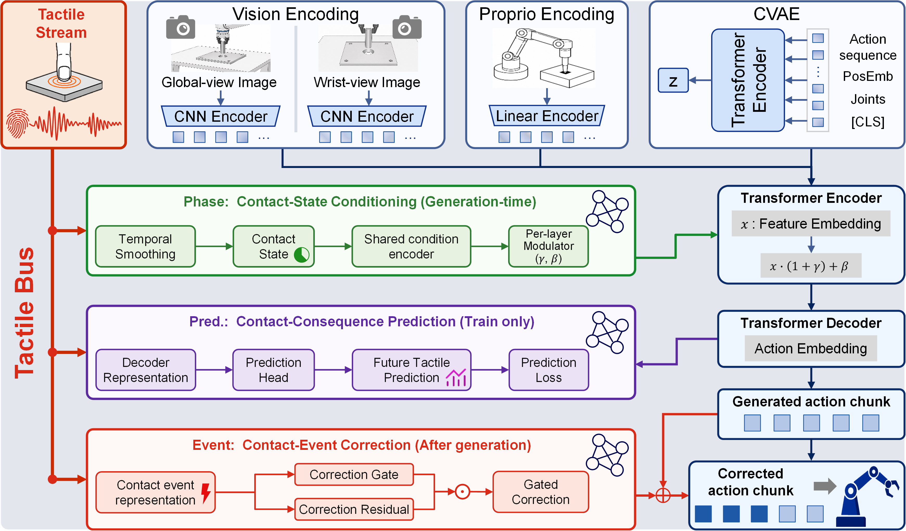

Anonymous Institution
Contact-rich insertion requires robots to combine visual alignment with tactile adjustment. However, existing visuotactile chunk-based policies collapse tactile feedback into a single generation-time fusion pathway, leaving persistent contact states, abrupt contact events, and future contact consequences implicitly modeled in a single representation.
We present PACE (Phase-Aware Contact-Event Conditioning), a temporal-role tactile conditioning framework for chunk-based insertion policies. PACE organizes a shared tactile stream into three temporal roles: persistent contact states condition action-chunk generation, abrupt contact events correct the generated chunk, and contact-consequence prediction shapes action representations during training. This design preserves chunk-level action continuity while assigning distinct pathways to different temporal roles of contact feedback.
Across five real-robot insertion tasks, PACE achieves an average success rate of 90.7%, outperforming vision-only and visuotactile fusion baselines by over 44 percentage points; on the ManipulationNet benchmark, PACE maintains 88.7% success across six geometry-clearance configurations, including an industrial-grade 0.1-mm clearance. Ablations confirm the complementary contributions of the three temporal roles, mechanistic analyses show that PACE separates normal insertion progress from contact events requiring immediate correction, and cross-signal and cross-architecture experiments indicate that this temporal-role principle extends across different physical feedback signals and policy backbones. Code, models, and datasets will be released.
PACE assigns the same tactile stream to three temporal roles: contact-state conditioning modulates encoder features at query time; contact-event correction corrects the generated chunk; and contact-consequence prediction supervises decoder hidden states during training.

We built a custom force-feedback teleoperation system around the Force Dimension sigma.7 haptic device that renders calibrated contact wrench to the operator in real time, producing demonstrations with natural contact-responsive behaviors (collision retreat, search adjustment, stable insertion). Each task has about 160 demonstrations of roughly 300 steps.
Demonstrations are collected via sigma.7 force-feedback teleoperation. Both videos in each row show the same episode: left is the robot execution, right is the time-synchronized data stream. These videos are played at 1x speed.
Operator teleoperates 2-pin insertion via sigma.7
Time-synchronized multimodal data stream
Five real insertion tasks covering orientation constraints, hidden pins, multi-point contact, small-clearance sensitivity, and sustained-force insertion.
NIST Assembly Task Board (ATB) peg-in-hole benchmark from ManipulationNet: standardized stainless-steel cylindrical and hexagonal pegs with manufacturing tolerance below 20 μm, paired with corresponding holes at three clearance levels (3 mm, 1 mm, 0.1 mm), yielding six geometry–clearance configurations. PACE achieves 88.7% average success across all six configurations, including industrial-grade 0.1 mm clearance.
This experiment tests cross-signal generality by replacing the default GF225 tactile-force signal with end-effector six-axis force/torque or joint currents, and evaluating on 2-pin and Key. Both alternatives remain close to the tactile default (93.3%), reaching 90.0% and 88.3%, indicating that PACE is not limited to the default tactile sensor. The videos below show representative 2-pin rollouts at three different target positions tested in sequence.
Tactile (GF225)
EEF Force/Torque
Joint Current
To test cross-backbone generality, we integrate the same Phase/Event/Pred. roles into Diffusion Policy and evaluate on 2-pin and Key. DP+PACE reaches 88.3% average success, a 70.0 pp improvement over vanilla DP, indicating that PACE's temporal-role organization remains effective across different policy backbones. The videos below show representative 2-pin rollouts at three different target positions tested in sequence.
If you find this work useful, please cite:
@article{anonymous2026pace,
title = {PACE: Temporal-Role Tactile Conditioning for Chunk-Based Insertion Policies},
author = {Anonymous},
journal = {CoRL},
year = {2026}
}